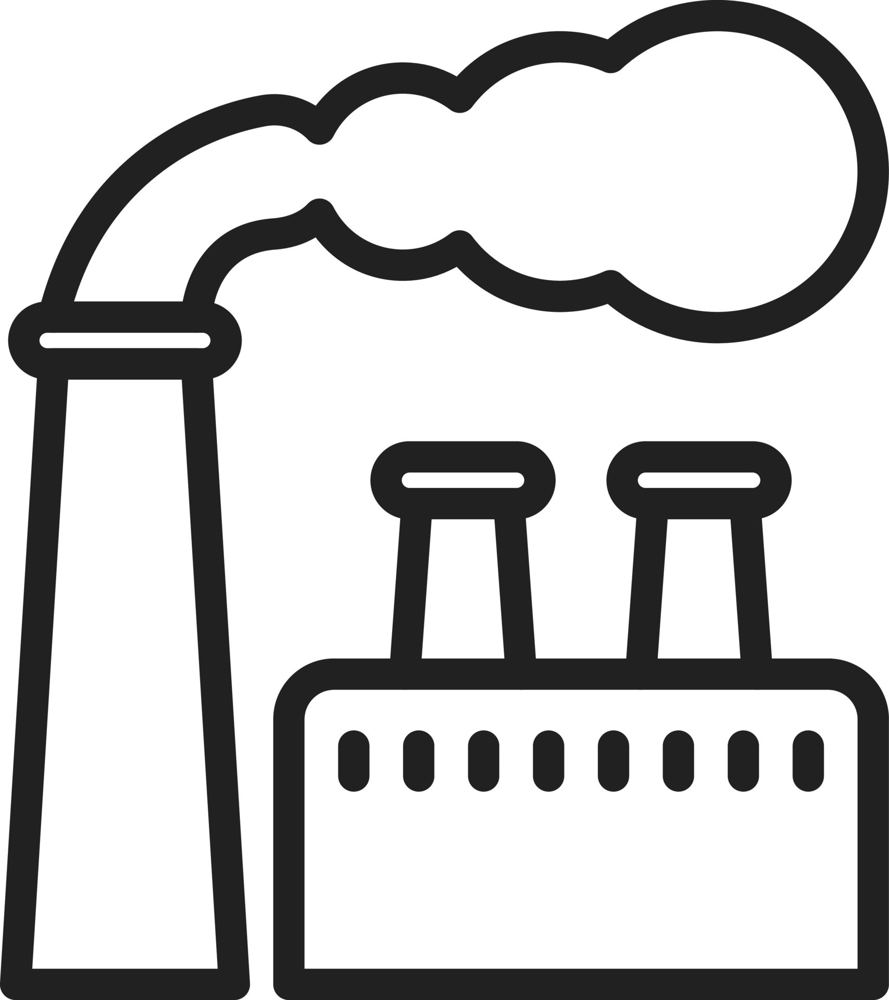
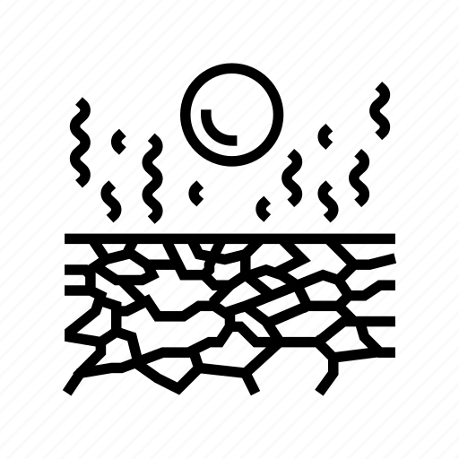
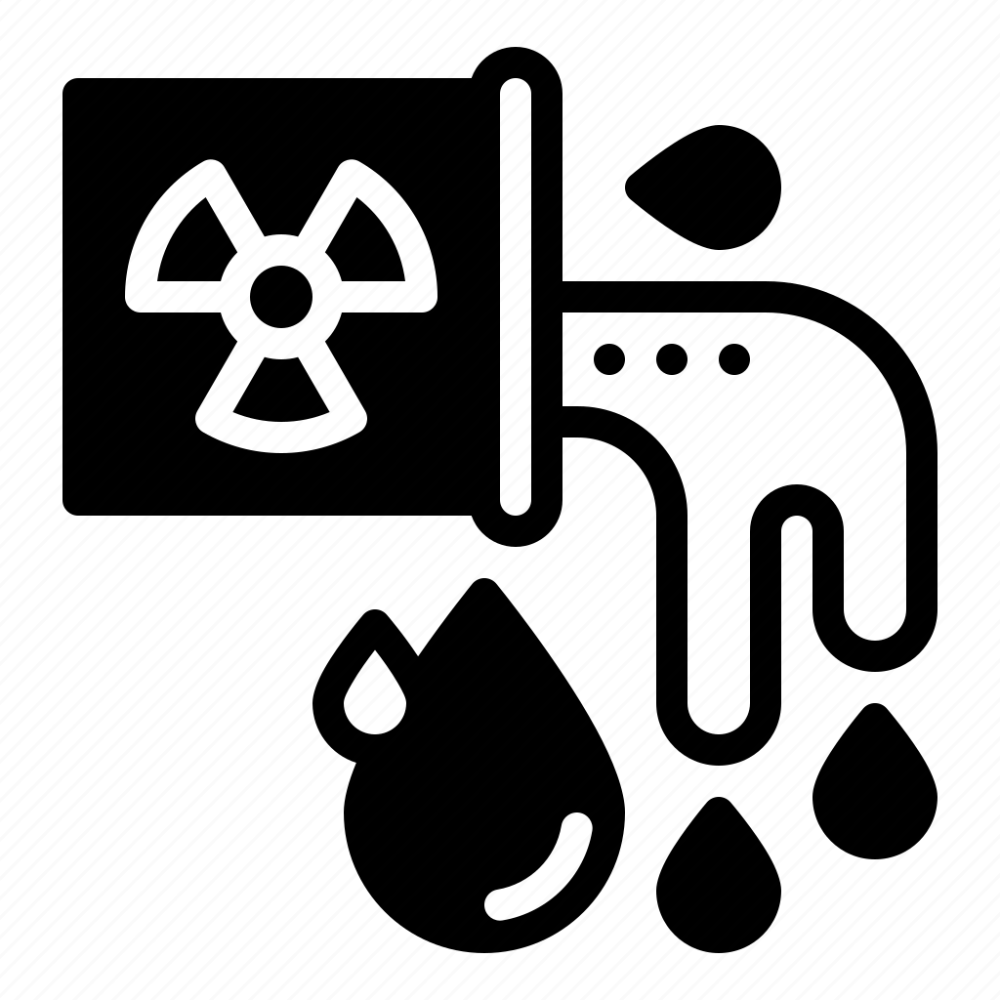
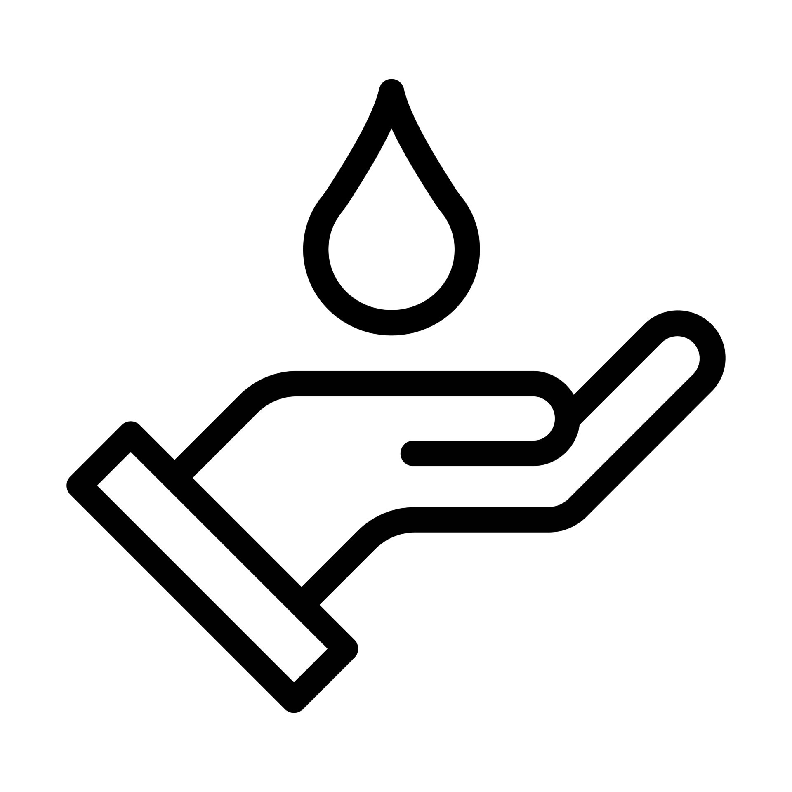

<!DOCTYPE html>
<html>
<head>
  <title>Explore Tunisia</title>
  <link rel="stylesheet" href="https://unpkg.com/leaflet/dist/leaflet.css" />
  <script src="https://unpkg.com/leaflet/dist/leaflet.js"></script>
  <style>
    #map { height: 100vh; }
    .popup-content {
      font-family: Arial, sans-serif;
      line-height: 1.5;
      font-size: 14px;
    }
    .popup-title {
      font-weight: bold;
      font-size: 16px;
      margin-bottom: 8px;
    }
    .popup-data {
      margin: 5px 0;
    }
    .high { color: red; }
    .moderate { color: orange; }
    .low { color: green; }
    .icon {
      width: 16px;
      height: 16px;
      margin-right: 5px;
    }
  </style>
</head>
<body>

  <div id="map"></div>

  <script>
    var map = L.map('map').setView([34.76, 9.76], 7);
    L.tileLayer('https://{s}.tile.openstreetmap.org/{z}/{x}/{y}.png', {
      attribution: '&copy; <a href="https://www.openstreetmap.org/copyright">OpenStreetMap</a> contributors'
    }).addTo(map);
    function getSeverityClass(value) {
      if (parseInt(value) >= 70) {
        return 'high'; 
      } else if (parseInt(value) >= 40) {
        return 'moderate'; 
      } else {
        return 'low';
      }
    }

    function cityStyle(feature) {
      return {
        color: '#ff7800', 
        weight: 2,
        opacity: 1
      };
    }

    function onEachFeature(feature, layer) {
      layer.on({
        mouseover: (e) => {
          var layer = e.target;
          layer.setStyle({
            weight: 4,
            color: '#666',
            fillOpacity: 0.7
          });
        },
        mouseout: (e) => {
          geojson.resetStyle(e.target);
        },
        click: (e) => {
          map.fitBounds(e.target.getBounds()); 
        }
      });
      var regionName = feature.properties.name;
      var airPollution = feature.properties.air_pollution;
      var desertification = feature.properties.desertification;
      var waterPollution = feature.properties.water_pollution;
      var waterScarcity = feature.properties.water_scarcity;
      layer.bindPopup(`
        <div class="popup-content">
          <div class="popup-title">${regionName}</div>
          <div class="popup-data">
            
            <b>Air Pollution:</b> <span class="${getSeverityClass(airPollution)}">${airPollution}</span>
          </div>
          <div class="popup-data">
            
            <b>Desertification:</b> ${desertification}
          </div>
          <div class="popup-data">
            
            <b>Water Pollution:</b> <span class="${getSeverityClass(waterPollution)}">${waterPollution}</span>
          </div>
          <div class="popup-data">
            
            <b>Water Scarcity:</b> <span class="${getSeverityClass(waterScarcity)}">${waterScarcity}</span>
          </div>
        </div>
      `);
    }

    var geojson;
    fetch('complete_TN_regions.geojson')
      .then(response => response.json())
      .then(data => {
        geojson = L.geoJson(data, {
          style: cityStyle,  
          onEachFeature: onEachFeature 
        }).addTo(map);
      });

  </script>

</body>
</html>
